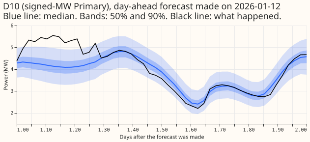
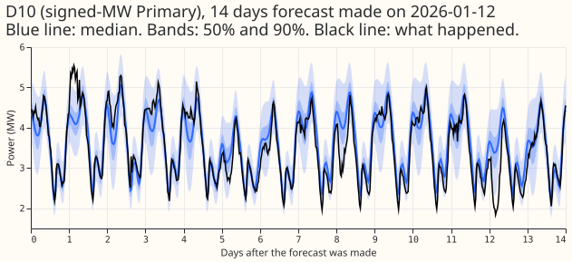
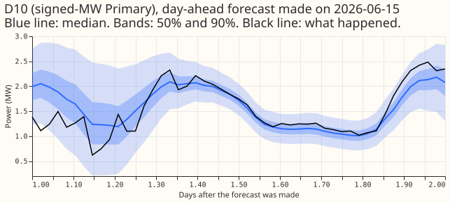
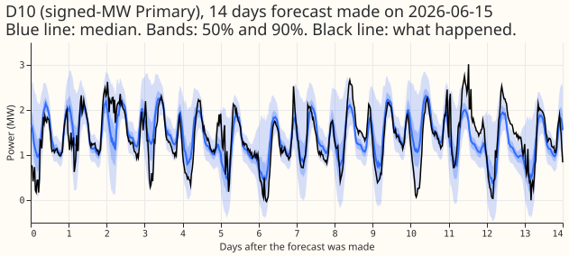
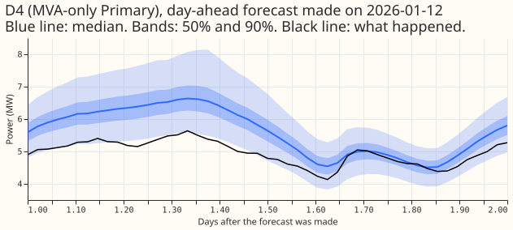
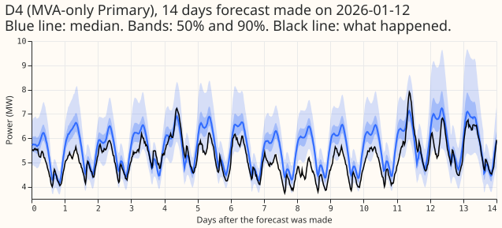
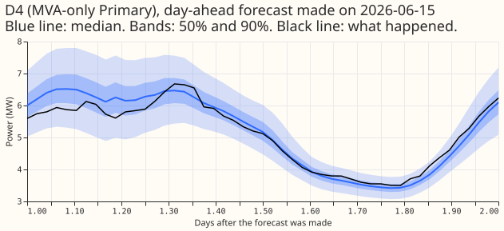
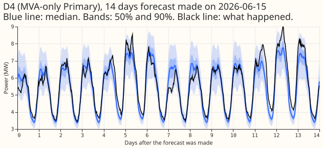

Do the solar summary, the sunny flag, and a different row-weight half-life, which helped the XGBoost model, also help the pooled mixture density network?
Take-home message: the XGBoost model's solar-summary input did not carry over to the pooled plain neural network, and neither did the shorter half-life, so none of the input changes is adopted.
The solar summary cannot be told apart from seed noise. Adding the daily mean of the ensemble's
shortwave radiation (sol) lowered the continuous ranked probability score (CRPS) at the six
signed-MW Primaries (primary substations whose power flows both ways, measured in signed megawatts)
by only 0.012 points of capacity (-0.043 to +0.013). The change is one sixth of the minimum
detectable effect (0.0738 points, twice the fold-to-fold spread of the difference between two sets
of random seeds).
A refit with new seeds moved the MVA-only eight more than the solar summary did. The same neural
network refitted with new seeds (ctrl_s3) moved the MVA-only eight (the Primaries measured
in megavolt-amperes) by -0.047 (-0.075 to -0.022), about six times as far as sol did there
(-0.008). At the signed-MW six the refit moved the CRPS by +0.011, the same size as sol.
The sunny flag with a 1-year half-life, and the 0.25-year half-life, did not help. Adding the
sunny flag and a 1-year half-life (bundle) was worse than sol by +0.033 and +0.037. The
0.25-year half-life (hl91r, sol_hl91) raised the signed-MW six CRPS by +0.044 (+0.004 to +0.099)
and +0.048 (+0.006 to +0.088) while lowering the D15 and D18 CRPS, as experiment 407's 0.25-year
half-life did.
The reference ctrl_w115 stays. Whether a solar summary helps this neural network needs more
than three seeds or more than five test months. The verdict is not supported. Every number comes
from five test months, so all are interim.

Results
The best arm by CRPS at the signed-MW six is sol_w115, but its margin over the reference is
smaller than the seed noise. The table gives the CRPS at days 1 to 10, mean over Primaries with
equal weight, in points of capacity (smaller is better), and the median absolute error
(mae_median) beside it. Every arm is widened by 1.15 about the median (the _w115 suffix is
dropped in the text). The reference ctrl_w115 is the stored pooled plain neural network of
experiment 407 (seeds 0 to 2); ctrl_s3 is the same neural network refitted with seeds 3 to 5.
| Arm | CRPS signed-MW six | CRPS MVA-only eight | CRPS D15 and D18 (report-only) | mae_median signed-MW six | mae_median MVA-only eight | mae_median D15 and D18 |
|---|---|---|---|---|---|---|
| ctrl_w115 (reference) | 3.277 | 3.858 | 8.653 | 5.707 | 7.027 | 14.855 |
| ctrl_s3 | 3.288 | 3.811 | 8.612 | 5.737 | 6.933 | 14.608 |
| sol | 3.266 | 3.850 | 8.943 | 5.701 | 7.013 | 15.204 |
| bundle | 3.298 | 3.887 | 9.184 | 5.751 | 7.090 | 15.806 |
| hl91r | 3.333 | 3.854 | 8.349 | 5.861 | 6.966 | 14.189 |
| sol_hl91 | 3.313 | 3.882 | 8.537 | 5.841 | 7.011 | 14.397 |
ctrl_s3is the seed-noise yardstick. Refitting the reference neural network with new seeds moved the MVA-only eight CRPS from 3.858 to 3.811, a larger change than any input change made at the MVA-only eight. At the signed-MW six the refit moved the CRPS by +0.011, andhl91rmoved it by +0.056.- The median error mostly follows the CRPS. At the signed-MW six the order of the arms by
mae_medianis the same as the order by CRPS (sol,ctrl_w115,ctrl_s3,bundle,sol_hl91,hl91r). At the MVA-only eight the orders differ:sol_hl91beats the reference onmae_median(7.011 against 7.027) and not on CRPS (3.882 against 3.858).
Minimum detectable effect
The minimum detectable effect is 0.0738 points. The minimum detectable effect is twice the
standard deviation (0.0369) over the five folds of the difference in signed-MW six CRPS between
ctrl_w115 (seeds 0 to 2) and ctrl_s3 (seeds 3 to 5). The Difference column is ctrl_w115 minus
ctrl_s3, the opposite sign to S0 below.
| Fold (month of forecast origin) | ctrl_w115 | ctrl_s3 | Difference |
|---|---|---|---|
| 2025-10 | 2.361 | 2.390 | -0.029 |
| 2025-12 | 4.011 | 4.075 | -0.065 |
| 2026-01 | 4.077 | 4.049 | +0.028 |
| 2026-03 | 3.214 | 3.200 | +0.014 |
| 2026-06 | 2.593 | 2.596 | -0.003 |
Contrasts against the registered comparators
No contrast is a counted gain. The tables give treatment minus comparator, with the month-block
bootstrap 95% interval (20,000 resamples), at days 1 to 10. A gain counts only if the interval is
wholly below zero and the point estimate is below -0.0738. The comparator is the reference for S0
and S1, sol for S2 and S4, and ctrl_s3 for S3. The bootstrap resamples months, so it
does not include the seed noise of the fitted neural networks.
CRPS:
| Contrast | Signed-MW six | MVA-only eight | D15 and D18 (report-only) |
|---|---|---|---|
S0: ctrl_s3 minus reference |
+0.011 (-0.017 to +0.042) | -0.047 (-0.075 to -0.022) | -0.041 (-0.267 to +0.186) |
S1: sol minus reference |
-0.012 (-0.043 to +0.013) | -0.008 (-0.045 to +0.021) | +0.291 (-0.233 to +0.970) |
S2: bundle minus sol |
+0.033 (-0.013 to +0.108) | +0.037 (-0.009 to +0.100) | +0.242 (+0.025 to +0.501) |
S3: hl91r minus ctrl_s3 |
+0.044 (+0.004 to +0.099) | +0.043 (-0.048 to +0.133) | -0.264 (-0.904 to +0.106) |
S4: sol_hl91 minus sol |
+0.048 (+0.006 to +0.088) | +0.032 (-0.052 to +0.122) | -0.407 (-1.257 to +0.138) |
mae_median:
| Contrast | Signed-MW six | MVA-only eight | D15 and D18 (report-only) |
|---|---|---|---|
| S0 | +0.030 (-0.025 to +0.085) | -0.094 (-0.133 to -0.040) | -0.248 (-0.680 to +0.198) |
| S1 | -0.007 (-0.038 to +0.027) | -0.014 (-0.048 to +0.022) | +0.350 (-0.682 to +1.392) |
| S2 | +0.050 (-0.017 to +0.118) | +0.077 (-0.040 to +0.247) | +0.603 (+0.075 to +1.095) |
| S3 | +0.123 (+0.043 to +0.211) | +0.034 (-0.127 to +0.194) | -0.421 (-1.321 to +0.183) |
| S4 | +0.141 (+0.020 to +0.299) | -0.002 (-0.164 to +0.174) | -0.810 (-2.087 to +0.136) |
- At the MVA-only eight, the seed refit moved the CRPS about six times as far as the solar summary
did. The
S0interval excludes zero for a refit that changed nothing but the seeds (-0.047 against -0.008 forS1). At the signed-MW six the two are the same size and have opposite signs:S0is +0.011 andS1is -0.012. - In these five months, the 0.25-year half-life is worse at the signed-MW six in both
comparisons. The intervals of
S3andS4lie wholly above zero (+0.004 to +0.099, +0.006 to +0.088), though no point estimate reaches 0.10. bundleis worse thansolat D15 and D18 (+0.242, +0.025 to +0.501), the one place its interval excludes zero among the three groups.
Absolute CRPS per Primary
The reference CRPS ranges from 1.549 (D3) to 13.904 (D15) across the 16 Primaries, a spread far larger than the differences between arms at most Primaries. The table gives the CRPS at days 1 to 10 per Primary, in points of capacity. The signed-MW six are D5, D9, D10, D11, D14, and D16. The MVA-only eight are D2, D3, D4, D8, D12, D19, D21, and D22. D15 and D18 are report-only.
| Primary | ctrl_w115 | ctrl_s3 | hl91r | sol | bundle | sol_hl91 |
|---|---|---|---|---|---|---|
| D2 | 2.172 | 2.146 | 2.183 | 2.160 | 2.178 | 2.211 |
| D3 | 1.549 | 1.523 | 1.508 | 1.573 | 1.617 | 1.584 |
| D4 | 2.766 | 2.758 | 3.000 | 2.720 | 2.705 | 3.018 |
| D5 | 4.673 | 4.704 | 4.647 | 4.640 | 4.694 | 4.575 |
| D8 | 7.958 | 7.775 | 7.603 | 7.903 | 7.853 | 7.620 |
| D9 | 2.459 | 2.494 | 2.622 | 2.466 | 2.427 | 2.554 |
| D10 | 3.185 | 3.224 | 3.361 | 3.201 | 3.220 | 3.301 |
| D11 | 2.704 | 2.740 | 2.946 | 2.752 | 2.789 | 3.131 |
| D12 | 6.984 | 6.948 | 7.100 | 7.064 | 7.100 | 7.177 |
| D14 | 2.886 | 2.884 | 2.816 | 2.896 | 2.943 | 2.778 |
| D15 | 13.904 | 13.801 | 13.291 | 14.532 | 14.775 | 13.651 |
| D16 | 3.758 | 3.686 | 3.603 | 3.640 | 3.717 | 3.541 |
| D18 | 3.402 | 3.422 | 3.406 | 3.353 | 3.594 | 3.423 |
| D19 | 3.288 | 3.297 | 3.532 | 3.268 | 3.254 | 3.430 |
| D21 | 2.190 | 2.182 | 2.253 | 2.169 | 2.188 | 2.275 |
| D22 | 3.956 | 3.860 | 3.652 | 3.943 | 4.204 | 3.744 |
Coverage and loss at the outer quantiles
The 0.25-year half-life arms lowered the q99 pinball loss at the signed-MW six by 10.5% (hl91r)
and 13.6% (sol_hl91). The seed refit ctrl_s3 lowered it by 3.9% and sol by 5.3%. The tables
give coverage (Cov, nominal 0.01, 0.05, 0.95, and 0.99) and pinball loss (Pin) at the four outer
quantiles, days 1 to 10, mean over the six signed-MW Primaries. The reference ctrl_w115 is in
bold. The q99 pinball loss is 0.361 for the reference, 0.347 for ctrl_s3, 0.342 for sol, 0.323
for hl91r, and 0.312 for sol_hl91. The q95 coverage rose from 0.891 to 0.903 and 0.904 for the
two 0.25-year arms.
All half-hours (429,350 per arm):
| Arm | Cov q01 | Cov q05 | Cov q95 | Cov q99 | Pin q01 | Pin q05 | Pin q95 | Pin q99 |
|---|---|---|---|---|---|---|---|---|
| ctrl_w115 | 0.009 | 0.027 | 0.891 | 0.959 | 0.201 | 0.728 | 0.957 | 0.361 |
| ctrl_s3 | 0.009 | 0.027 | 0.893 | 0.961 | 0.203 | 0.738 | 0.948 | 0.347 |
| sol | 0.008 | 0.026 | 0.894 | 0.961 | 0.202 | 0.727 | 0.944 | 0.342 |
| bundle | 0.009 | 0.028 | 0.893 | 0.961 | 0.201 | 0.731 | 0.966 | 0.358 |
| hl91r | 0.008 | 0.027 | 0.903 | 0.966 | 0.203 | 0.751 | 0.927 | 0.323 |
| sol_hl91 | 0.007 | 0.026 | 0.904 | 0.968 | 0.203 | 0.742 | 0.925 | 0.312 |
Sunny low-demand half-hours (15,151 per arm; the sunny half-hours whose reference median is in the lowest quarter for the Primary):
| Arm | Cov q01 | Cov q05 | Cov q95 | Cov q99 | Pin q01 | Pin q05 | Pin q95 | Pin q99 |
|---|---|---|---|---|---|---|---|---|
| ctrl_w115 | 0.004 | 0.029 | 0.988 | 1.000 | 0.174 | 0.641 | 0.953 | 0.269 |
| ctrl_s3 | 0.002 | 0.024 | 0.989 | 0.999 | 0.172 | 0.640 | 0.961 | 0.268 |
| sol | 0.003 | 0.026 | 0.989 | 0.999 | 0.172 | 0.634 | 0.957 | 0.272 |
| bundle | 0.003 | 0.025 | 0.991 | 0.999 | 0.171 | 0.630 | 0.971 | 0.272 |
| hl91r | 0.003 | 0.027 | 0.988 | 1.000 | 0.178 | 0.671 | 0.979 | 0.279 |
| sol_hl91 | 0.004 | 0.026 | 0.988 | 1.000 | 0.183 | 0.676 | 1.011 | 0.291 |
- MVA-only eight, q95 and q99 coverage (all half-hours, 572,273 per arm).
ctrl_w1150.944 and 0.988;ctrl_s30.948 and 0.989;sol0.947 and 0.989;bundle0.943 and 0.988;hl91r0.948 and 0.990;sol_hl910.947 and 0.988. - D15 and D18, q95 and q99 coverage (all half-hours, 141,361 per arm).
ctrl_w1150.879 and 0.964;ctrl_s30.884 and 0.965;sol0.879 and 0.961;bundle0.878 and 0.961;hl91r0.902 and 0.973;sol_hl910.890 and 0.969. - The full tables, including the pinball losses of the other groups, are in the logs
rescore_a.log,rescore_b.log, andrescore_c.logof the private data folder.
Sunny April to June, cold nights, and Economy 7
The slices add no input change that clears the seed noise. The tables give the CRPS in points
of capacity. Economy 7 is an overnight cheap-rate tariff period. The slice contrasts below carry
intervals only for S0 to S4, where the logs print them.
Sunny April-to-June half-hours (point estimates only, because the slice rests on one scored month, 2026-06). The last column is the difference from the reference at the signed-MW six:
| Arm | Signed-MW six | MVA-only eight | D15 and D18 | Signed-MW six minus reference |
|---|---|---|---|---|
| ctrl_w115 | 3.247 | 4.569 | 8.720 | 0 |
| ctrl_s3 | 3.279 | 4.516 | 9.006 | +0.032 |
| sol | 3.257 | 4.602 | 9.340 | +0.010 |
| bundle | 3.264 | 4.642 | 10.424 | +0.018 |
| hl91r | 3.378 | 4.607 | 8.392 | +0.132 |
| sol_hl91 | 3.370 | 4.697 | 8.813 | +0.123 |
Cold nights (report-only):
| Arm | Signed-MW six | MVA-only eight | D15 and D18 |
|---|---|---|---|
| ctrl_w115 | 5.376 | 3.568 | 6.608 |
| ctrl_s3 | 5.303 | 3.457 | 6.497 |
| sol | 5.305 | 3.463 | 6.741 |
| bundle | 5.450 | 3.470 | 7.013 |
| hl91r | 5.266 | 3.462 | 6.385 |
| sol_hl91 | 5.243 | 3.421 | 6.548 |
Economy 7 step hours:
| Arm | Signed-MW six | MVA-only eight | D15 and D18 |
|---|---|---|---|
| ctrl_w115 | 2.670 | 2.886 | 8.543 |
| ctrl_s3 | 2.632 | 2.829 | 8.635 |
| sol | 2.643 | 2.837 | 8.735 |
| bundle | 2.710 | 2.910 | 8.955 |
| hl91r | 2.699 | 2.857 | 8.326 |
| sol_hl91 | 2.723 | 2.892 | 8.221 |
- Cold nights: new seeds alone lowered the CRPS with intervals that exclude zero.
S0is -0.055 (-0.105 to -0.005) at the signed-MW six and -0.102 (-0.114 to -0.024) at the MVA-only eight.S1(sol) is -0.128 (-0.305 to +0.081) and -0.094 (-0.205 to +0.057).S3(hl91r) is -0.051 (-0.153 to +0.038) and +0.023 (-0.049 to +0.083). - Economy 7 step hours:
sollowered the CRPS with intervals that exclude zero.S1is -0.046 (-0.081 to -0.010) at the signed-MW six and -0.051 (-0.094 to -0.005) at the MVA-only eight, butS0is -0.036 (-0.065 to -0.008) and -0.052 (-0.080 to -0.024), so the same size of change came from new seeds.S2showsbundleworse thansolby +0.069 (+0.011 to +0.131) and +0.065 (+0.019 to +0.117). - Sunny April to June.
solis +0.010 above the reference at the signed-MW six, +0.033 at the MVA-only eight, and +0.620 at D15 and D18. The prediction of at least 0.05 lower fails and decides nothing.
Avoidable curtailment cost
At 0.9 of the limit, arms differ from the reference by up to four times as much as the seed refit
does, but no interval is printed. The scorer prices the curtailment avoidable at the scaled
export limit (studies.node_curtailment), at 0.9 of the limit and in a sweep to 0.75 and 0.5. The
table gives the total over the Primaries for which the scorer returns a cost, in millions of
pounds. Several Primaries have no cost in any arm (null in the scorer logs).
| Arm | 0.9 of limit | 0.75 of limit | 0.5 of limit |
|---|---|---|---|
| ctrl_w115 | 9.91 | 23.68 | 50.91 |
| ctrl_s3 | 9.37 | 22.80 | 49.90 |
| sol | 8.18 | 21.29 | 49.03 |
| bundle | 10.36 | 24.87 | 52.35 |
| hl91r | 8.48 | 20.65 | 48.22 |
| sol_hl91 | 7.59 | 19.67 | 48.66 |
sol_hl91 has the lowest cost at 0.9 and 0.75 of the limit (23.5% and 16.9% below the reference),
and hl91r at 0.5. At 0.9 of the limit the seed refit ctrl_s3 is 5.5% below the reference, sol
17.5% below, sol_hl91 23.5% below, and bundle 4.5% above. No interval is printed, so no
difference in this table is read as an effect.
Example forecasts
The median, 50% band, and 90% band of the sol neural network (sol_w115, the best arm by
signed-MW six CRPS) against what happened, for D10 (a signed-MW Primary) and D4 (an MVA-only
Primary): a day-ahead forecast and a full 14-day forecast from one run, made in winter (2026-01-12)
and summer (2026-06-15). Charts of the reference ctrl_w115 are in this folder with the prefix
figure_example_ctrl_w115_.







Predictions
- S1 failed.
sollowers the signed-MW six CRPS by 0.012 (-0.043 to +0.013). The prediction asked for at least the minimum detectable effect (0.0738) and at least 0.02; the interval spans zero. At the MVA-only eight the change is -0.008 (-0.045 to +0.021). - S2 failed.
bundleis +0.033 abovesolat the signed-MW six and +0.037 at the MVA-only eight, outside the 0.03 limit at both. - S3 held.
hl91ragainstctrl_s3lowers the D15 and D18 CRPS by 0.264 (-0.904 to +0.106), the same sign as experiment 407 (-0.183). It lowers the cold-night CRPS at the signed-MW six by 0.051 (-0.153 to +0.038), the same sign as experiment 407's signed-MW six cold-night value (-0.162), and at D15 and D18 by 0.116 (-1.835 to +0.233). On cold nights at the MVA-only eight the change is +0.023 (-0.049 to +0.083). Experiment 407's -0.162 is a signed-MW six value, so the MVA-only eight figure is not an exception to the prediction as made. The plan does not name the group for the cold-night half of S3, so this page reports all three. The rise at the signed-MW six is +0.044, inside the 0.10 limit. - S4 held.
sol_hl91againstsollowers the D15 and D18 CRPS by 0.407 (-1.257 to +0.138), the same sign as S3. - The sunny April-to-June prediction failed and decides nothing.
solis +0.010 against the reference at the signed-MW six, not at least 0.05 lower.
Decision
The hypothesis is not supported, by the decision rule as written. S1 fails, so the hypothesis
is not supported on the solar-summary half. For the partly supported route, hl91r would need to
lower the signed-MW six or MVA-only eight CRPS against ctrl_s3 as a counted gain; it raised both
(+0.044 and +0.043), so that route is closed. No arm is carried forward: sol and bundle failed
their predictions, and the intervals of hl91r and sol_hl91 at the signed-MW six lie wholly above
zero. D15 and D18 and the cold-night slice are report-only and did not enter the decision.
Components adopted or not adopted
- Adopted, unchanged. The reference
ctrl_w115: the pooled plain neural network widened by 1.15, with a 0.5-year row-weight half-life, three Gaussian components, and the D15 and D18 start cut. - Not adopted:
sol. The two daily-mean shortwave columns lowered the CRPS by 0.012 at the signed-MW six, one sixth of the minimum detectable effect. - Not adopted:
bundle. The sunny flag and the 1-year half-life madesolworse. - Not adopted:
hl91randsol_hl91. The 0.25-year half-life raised the signed-MW six CRPS with intervals wholly above zero. The lower D15 and D18 CRPS, lower q99 pinball loss, and lower curtailment cost of the two 0.25-year arms are report-only and carry wide intervals. - Not fitted:
temp. The trailing temperature means were left to a separate experiment.
Limits
- Selection twice. Experiments 381 and 407 both picked their arms on months that include these
five, so a gain here would have been selected twice. No arm gained, so the limit only adds to the
caution on
hl91randsol_hl91. - Five interim months. The month-block bootstrap has wide intervals, most of all at D15 and D18, and no claim of benefit rests on any number here.
- The partial first and last local day. The daily mean in the first local day of every numerical weather prediction (NWP) run covers only the afternoon and evening. The last local day holds one or two near-midnight steps. The neural network therefore sees a different quantity at days 1 and 2 than later. The solar summary of experiment 381 was built the same way, from the control member instead of the ensemble mean.
- The month-block bootstrap understates seed noise. In this experiment one refit with new seeds moved the MVA-only eight CRPS by -0.047 (-0.075 to -0.022), which suggests the month-block bootstrap understates the noise. Telling an input change from seed noise at that group needs more than three seeds or more than five test months.
- The minimum detectable effect is noisy. It rests on five fold differences from one pair of seed sets, and the MVA-only eight moved by 0.047 between the same two sets.
ctrl_s3differs from the reference. The refit with seeds 3 to 5 scores 3.288 against 3.277 at the signed-MW six and 3.811 against 3.858 at the MVA-only eight, so the two seed sets are not interchangeable.hl91rdiffers from experiment 407'shl91.hl91ruses seeds 3 to 5 and a half-life of exactly 0.25 years (91.3125 days), against seeds 0 to 2 and 91 days:hl91_w115scored 3.350, 3.883, and 8.471 in experiment 407 (signed-MW six, MVA-only eight, D15 and D18) against 3.333, 3.854, and 8.349 forhl91r.- Unlogged load-shift events. National Grid Electricity Distribution (NGED) says load-shift events may be missing from its logs, so the training rows and the scoring rows can hold events no label covers.
- Cleaned data. Training rows drop every half-hour that the cleaned power table flags as an exact zero, and every row whose lag reaches one. The scorer dropped 1,179 flagged half-hours from the actuals of every arm, including the stored reference. Training rows dropped per fold: 2,155 (2025-10), 2,846 (2025-12), 2,886 (2026-01), 2,899 (2026-03), and 2,925 (2026-06). Every arm's scored keys match the reference's, with 348,192 rows in each of the first four folds and 336,960 in 2026-06.
- The curtailment cost has no interval. The scorer prints one total per arm.
Saved neural networks and logs
The fitted neural networks of the five new arms are saved in
data/ml-experiments/00419-pooled-mixture-density-network-solar-summary-sunny-flag-and-half-life-input-ports/work/models
of the private data folder (the reference was fitted by experiment 407). The scorer logs are
rescore_a.log (ctrl_s3, hl91r), rescore_b.log (sol, bundle), and rescore_c.log (sol,
sol_hl91) in the folder above it.
Problems caused by the move
None.
Plan as committed before any fit
Question and design
We add one XGBoost input change at a time to the pooled plain neural network and compare each change with the same neural network widened by 1.15. Experiment 381 found that two columns holding the daily mean of the ensemble's shortwave radiation, today and yesterday, lowered the XGBoost model's CRPS by 0.051 points at the signed-MW six. The pooled plain neural network of experiment 397 has the solar geometry (cosine of the zenith, sine and cosine of the azimuth) and the ensemble mean and spread of shortwave at the valid time, but not that daily summary and not a cloud-aware sunny flag.
- The neural networks. The pooled plain neural network of experiment 397 (setting
g09, summary scheme, an 8-wide Primary embedding, three Gaussian components) on its five screen folds (test months 2025-10, 2025-12, 2026-01, 2026-03, and 2026-06), refitted monthly, three seeds averaged in quantile space, with the same scoring rows. Every arm is widened by 1.15 about the median on q01, q05, q95, and q99, as the reference is. refandctrl_s3. The referencectrl_w115stored by experiment 407 (seeds 0 to 2; not refitted), and the same neural network fitted again with seeds 3 to 5, which gives the minimum detectable effect and a seed-matched reference forhl91r.sol. Addsshortwave_day_meanandshortwave_prev_day_mean(experiment 381's arm A2), computed from the ensemble-mean shortwave of the same NWP run over the local day of the valid time and over the previous local day, standardised on each fold's training rows like the other weather inputs. A previous-day mean missing at the start of a run is replaced by the day's own mean, and a daily mean cut short by the end of the 14-day horizon uses the steps available.hl91r. The reference with row weights that halve every 0.25 years, with seeds 3 to 5. The 0.25-year half-life is carried from experiment 407, whosehl91used seeds 0 to 2.sol_hl91.solwith the 0.25-year half-life carried from experiment 407.bundle.solplus the sunny flag andsunny_times_shortwave(experiment 381's arm A4: the flag is 1 where the ensemble-mean shortwave exceeds 0.6 times the Haurwitz clear-sky irradiance) with row weights that halve every 1 year: experiment 381's weekly bundle, refitted monthly.temp. Adds trailing temperature means and heating degrees (experiment 396's arm W1). It is not fitted here, and a separate experiment tests it if experiment 396 reports that W1 beats its noise floor.- The start cut. D15 and D18 lose every training row before 2025-03-01, and every row whose weekly lag reaches back before that date (as in experiments 406 and 407). The scoring rows start in 2025-10, so no scoring actual or inference input is affected.
- Not in this experiment. The sunny flag alone and a 1-year half-life alone, because experiment
381 (-0.002) and experiment 407's
hl365(+0.009) already tested them.
Components adopted from earlier results
- Adopted. One pooled neural network with a Primary embedding (experiment 403); the ensemble mean and spread passed through the neural network once (experiments 397 and 394); monthly refits; the 1.15 widening and the 0.5-year half-life of the control (experiment 407: no tail arm and no other half-life beat the widened control at the signed-MW six); and the D15 and D18 start cut (experiment 399).
- Carried for retest. The 0.25-year half-life, because it lowered the score at D15 and D18 and on cold nights in experiment 407 although its interval at the signed-MW six included zero.
- Not adopted. Attention over input groups (experiment 397: the gate stayed within 0.01 of uniform), the differentiable physics neural network (experiment 413: worse than the plain neural network by 0.17 and 0.23 points), and any tail arm (experiment 407).
Standing practices followed, and the deviations
- Followed. Monthly refits; every fitted neural network saved in the private data folder; stored forecasts reused as references and never refitted; a few-fold screen with every number labelled interim; tails (coverage and pinball loss at q01, q05, q95, and q99, on all half-hours and on sunny low-demand half-hours) and the avoidable-curtailment cost reported beside the CRPS; example forecast charts; a fresh Sonnet plan review and a fresh Sonnet code review before the first fit.
- Cleaned data. Training rows drop every half-hour that the cleaned power table flags as an
exact zero (
substation_zero) and every row whose lag reaches one, and the scorer drops flagged half-hours from the actuals of every arm including the references. The number of rows dropped is printed for each fold. The reference was fitted with the same rule in experiment 407. - Departure: the sanity contrast. Experiment 407's
ctrldiffers from experiment 406's pooled plain neural network by -0.021 points at the signed-MW six, which is the size of the change that the cleaned training rows made. Differences below that size are not read as effects.
Fit counts, time, and memory
- Fits.
sol,hl91r,sol_hl91,bundle, andctrl_s3: five arms by five folds by three seeds, so 75 fits. The widening is the fixed factor 1.15, not a fitted factor. - Time. About 40 to 50 seconds per fit on the GPU, so about 1 hour in total.
- Run recipe. One GPU process under
systemd-run --user --scope -p MemoryMax=8G -p OOMPolicy=continuewith one feeder core. The scorer runs in passes of a few arms, because holding every arm's rows at once needs more than 14 GB. - Stored. Forecasts per arm, fold, and seed (
time_series_id,power_fcst_init_time,valid_time,lead_hours,q01toq99) and every fitted neural network, in this experiment's private folder. The scorer matches the scored keys and the row count of every arm to the reference and prints the row counts per fold. The screen months are the five of experiment 407, so its stored reference is reused.
Checks the write-up reports
- Absolute CRPS of every arm beside the reference and experiment 406's per-Primary neural network, per group and per Primary.
- Coverage and pinball loss at the four outer levels, on all half-hours and on sunny low-demand half-hours (the sunny half-hours whose reference median is in the lowest quarter for the Primary).
- The CRPS on sunny April-to-June half-hours, on cold nights, and on Economy 7 step hours.
- The cost of avoidable curtailment at the scaled export limit (
studies.node_curtailment, 0.9 of the limit, swept to 0.75 and 0.5), if the scorer offers it. - The CRPS on sunny April-to-June half-hours and on sunny low-demand half-hours, both defined from experiment 381's flag and the reference's median for every arm, as in experiment 407.
- The tails (coverage at q95 and q99) as a separate screen beside the CRPS.
- Audit checks: the difference between the median's error and the mean's error beside each contrast, and the results re-derived by a fresh Sonnet agent before the write-up.
- Example forecasts for D10 (signed-MW) and D4 (MVA-only): a day-ahead forecast and a full 14-day forecast from one run, in winter (made in January) and summer (made in June), of the best arm.
Caveats registered before the scores
- The solar summary is built from the ensemble mean. Experiment 381 built it from the control member, so a difference from that experiment's effect may come from the mean.
- Experiment 381 chose its arms on the year it scored, so its -0.051 is an upper bound.
-
The plan was reviewed against the evidence since the programme brief: experiment 407's
hl365and experiment 381 already tested the 1-year half-life and the sunny flag alone, 413's physics neural network did not advance, and 396's arm W1 has not reported, sotempis left out. -
The first and last local day of every run are partial. Every NWP run starts at 09:30 UTC and lasts 14 days, so the first local day's daily mean covers only the afternoon and evening, and the last local day holds one or two near-midnight steps. Training and inference build the columns the same way, and experiment 381 did too, so the columns are consistent; the neural network sees a different quantity at days 1 and 2 than later.
- The half-lives are exactly 0.25 and 1 year (91.3125 and 365.25 days), against 91 and 365 days
in experiment 407, so the comparison with 407's
hl91is close but not exact. - The minimum detectable effect is noisy, because it rests on five fold differences from one pair of seed sets.
Counting towards the demand-v2 stop rule
This experiment does not count. It tests input changes on an existing model, not a new demand model, so no idea's count rises whatever the verdict.
Problems caused by the move
None so far.